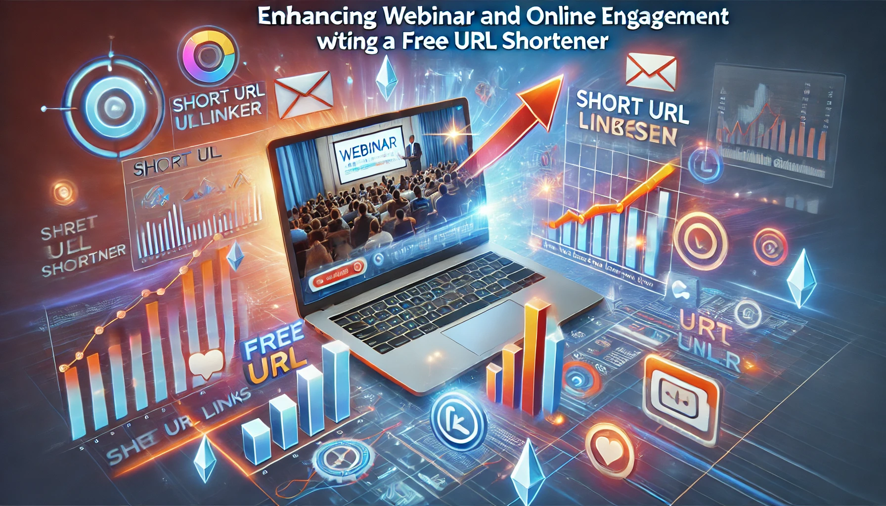

Enhancing Webinar and Online Course Engagement with a Free URL Shortener
In the digital age, webinars and online courses have become essential tools for education, professional development, and marketing. As these virtual events grow in popularity, so does the need for effective strategies to boost engagement and participation. One such strategy is the use of URL shorteners. A free URL shortener can significantly enhance webinar and online course engagement by making links more manageable, trackable, and shareable. In this article, we will explore how to leverage URL shorteners to maximize the impact of your webinars and online courses.
The Importance of Engagement in Webinars and Online Courses
Engagement is crucial for the success of webinars and online courses. High engagement levels can lead to better retention of information, higher satisfaction rates, and increased likelihood of participants returning for future events. Key engagement metrics include attendance rates, participation in discussions, completion rates, and post-event interactions. Enhancing these metrics requires innovative and user-friendly approaches, and URL shorteners provide a practical solution.
What is a Free URL Shortener?
A Free URL shortener is a tool that converts a long URL into a shorter, more manageable link. For example, a lengthy webinar registration link can be transformed into a concise, easy-to-share URL. This not only improves the aesthetics of the link but also makes it more convenient for sharing on social media, in emails, and during presentations. Some URL shorteners also offer additional features like link tracking, custom branding, and QR code generation, which can further enhance engagement.
Benefits of Using URL Shorteners in Webinars and Online Courses
- Improved Accessibility and Shareability Long, cumbersome URLs can be a deterrent for participants. They are prone to errors when typed manually and can appear unprofessional in marketing materials. URL shorteners create clean, easy-to-share links that can be effortlessly distributed across various platforms. This increased accessibility can lead to higher registration and attendance rates.
- Enhanced Tracking and Analytics Understanding participant behavior is crucial for optimizing future webinars and courses. Many URL shorteners come with built-in analytics that track clicks, geographic locations, referral sources, and more. These insights can help organizers understand which marketing channels are most effective, what times of day yield the highest engagement, and which regions have the most active participants.
- Custom Branding Custom branded URLs can reinforce your brand identity and increase trust among participants. Instead of using generic shortened links, you can create personalized URLs that reflect your brand. This not only looks professional but also helps in building a consistent brand image across all marketing efforts.
- Simplified Link Management Managing multiple links for registration pages, course materials, feedback forms, and more can be challenging. URL shorteners provide a centralized platform to manage all these links efficiently. This simplification can save time and reduce the risk of sharing incorrect or outdated links.
- Increased Engagement through Interactivity URL shorteners can be used to create interactive elements within webinars and online courses. For instance, you can generate short links for polls, quizzes, surveys, and additional resources. These interactive elements can keep participants engaged and active throughout the session, leading to better retention of information.
Practical Applications of URL Shorteners in Webinars and Online Courses
- Pre-Webinar Engagement Engaging participants before the webinar starts is crucial for building anticipation and ensuring attendance. Use URL shorteners to share registration links, promotional content, and reminders. Shortened links can be easily included in email campaigns, social media posts, and advertisements.
- During the Webinar During the live session, presenters can share shortened links to resources, interactive polls, and feedback forms. This real-time sharing can enhance the participant experience by providing easy access to additional content without disrupting the flow of the presentation.
- Post-Webinar Follow-Up After the webinar, follow-up is essential to maintain engagement and encourage future participation. Use shortened URLs to distribute recording links, presentation slides, and feedback surveys. This makes it easy for participants to access the content and provide valuable feedback.
- Online Course Materials For online courses, URL shorteners can streamline access to course materials, assignments, and supplementary resources. Instructors can share concise links to readings, videos, and discussion forums, making it easier for students to navigate the course content.
- Event Promotion and Marketing Marketing your webinars and online courses effectively is key to attracting a large audience. Use URL shorteners to create trackable links for various marketing channels, including email campaigns, social media ads, and partnership promotions. Analyzing the performance of these links can help you refine your marketing strategy for better results.
Case Study: Enhancing Engagement with Shorten World
To illustrate the effectiveness of URL shorteners, let’s consider a hypothetical case study involving Shorten World, a leading URL shortening service.
Scenario:
An educational organization, EduLearn, hosts monthly webinars on various professional development topics. Despite having valuable content, they struggle with low registration and attendance rates. Additionally, they have difficulty tracking which marketing efforts are driving the most traffic.
Solution:
EduLearn decides to integrate Shorten World into their marketing and engagement strategy. Here’s how they do it:
- Pre-Webinar Promotion:
EduLearn uses Shorten World to create branded, trackable short links for webinar registration. These links are shared across their email newsletters, social media platforms, and partner websites. The clean, professional appearance of the links increases click-through rates, and the tracking feature allows EduLearn to identify which channels are most effective. - Live Webinar Engagement:
During the live webinars, presenters share shortened links to interactive polls, Q&A sessions, and resource downloads. This keeps participants actively engaged and provides real-time feedback that presenters can use to adjust their content. - Post-Webinar Follow-Up:
After each webinar, EduLearn sends follow-up emails with shortened links to the webinar recording, presentation slides, and a feedback survey. These easy-to-access links encourage participants to revisit the content and provide feedback, which is crucial for improving future webinars. - Online Course Integration:
For their online courses, EduLearn uses Shorten World to manage links to course modules, assignments, and additional resources. This centralized link management simplifies the process for both instructors and students, leading to a more organized and efficient learning experience.
Results:
By integrating Shorten World, EduLearn sees a significant increase in registration and attendance rates. The tracking data helps them optimize their marketing efforts, resulting in higher engagement and better-targeted promotions. Participants appreciate the ease of accessing content through short links, and the feedback collected post-webinar provides valuable insights for continuous improvement.
Best Practices for Using URL Shorteners
To maximize the benefits of URL shorteners, consider the following best practices:
- Choose a Reliable URL Shortener:
Select a URL shortener that offers robust features, including tracking, custom branding, and link management. Shorten World, for instance, is known for its reliability and comprehensive feature set. - Customize Your Links:
Whenever possible, create custom-branded short links that reflect your brand identity. This builds trust and recognition among your audience. - Track and Analyze:
Use the analytics provided by your URL shortener to track the performance of your links. Analyze the data to identify trends, understand participant behavior, and refine your marketing strategies. - Test Your Links:
Before sharing shortened links, test them to ensure they work correctly and direct participants to the intended destination. This prevents frustration and maintains a professional image. - Promote Interactivity:
Use short links to create interactive elements within your webinars and courses. Encourage participants to engage with polls, quizzes, and feedback forms through easy-to-access links. - Maintain Consistency:
Use URL shorteners consistently across all your marketing and engagement efforts. This creates a seamless experience for participants and helps in building a cohesive brand image.
Conclusion
Incorporating a free URL shortener into your webinar and online course strategy can significantly enhance engagement and participation. By making links more accessible, trackable, and shareable, you can improve registration rates, increase live interaction, and gather valuable feedback. As illustrated in the case study of EduLearn, using a reliable URL shortener like Shorten World can lead to measurable improvements in your virtual events. By following best practices and leveraging the full potential of URL shorteners, you can create a more engaging and successful learning experience for your participants.